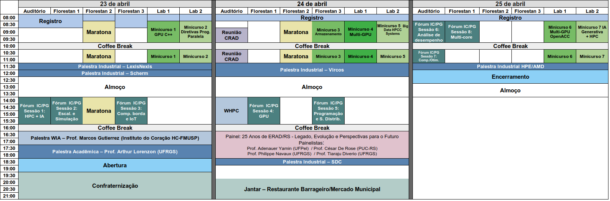

<section id="light-card">
    <div class="p-2 container col-sm-12 col-lg-8 text-justify">
        <h2 class="p-4 text-center">Cronograma</h2>
       <p class="lead text-center">
            Mais informações sobre as atividades podem ser encontradas no menu "Programação".
        </p>
        <br>
        <div class="row">
            <div class="col-sm">
                <figure>
                    
                </figure>
            </div>
        </div>
       
</section>
